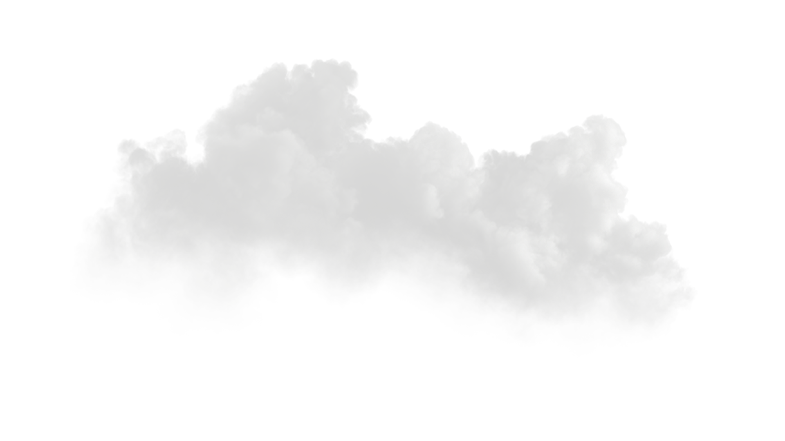
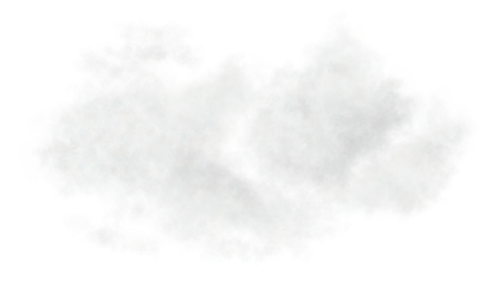
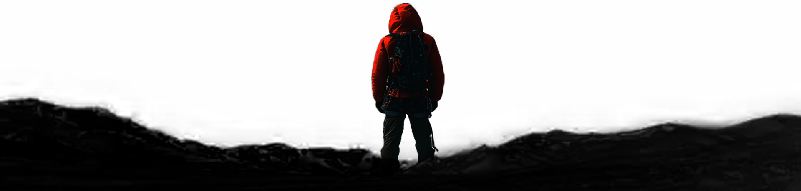

DÉTERMINATION

La résilience, c'est tomber, se briser, puis se reconstruire. Le chemin n'est plus une ligne droite, il est fait de hauts et de bas, mais la destination reste la même. On ne revient pas comme avant : on se relève plus fort, capable de transformer chaque échec en une nouvelle étape vers l'objectif.